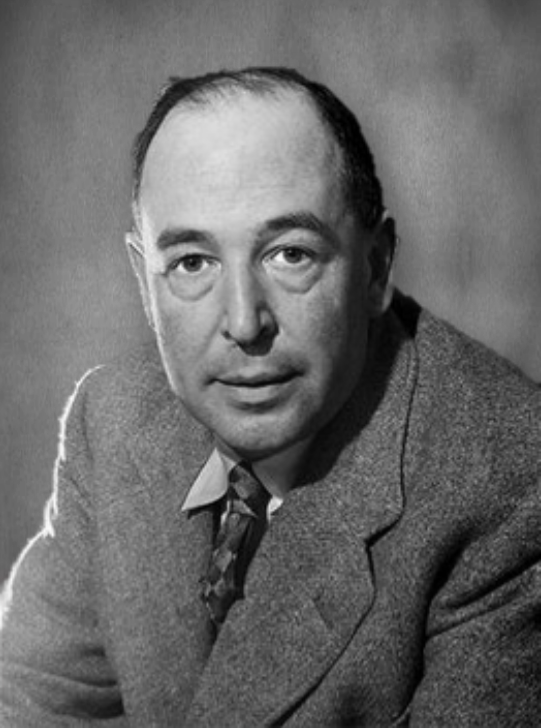
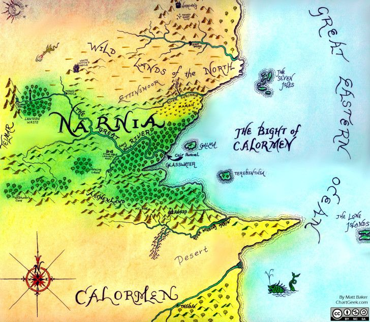

A gyermeki képzelőerő határtalan. „Micsodaaa, hogy ez most valóság?!” Narnia egy varázslatos hely, ami nem valami képzelgés. Ez a világ tele van meglepő szerzetekkel és varázslattal. C. S. Lewis könyvsorozata által, olyan kalandoknak lehetük részesei, amelyek közben is el kell gondolkoznunk, hogy ez most csak álom vagy valóság. Visszarepülünk a gyerekkor játékos hangulatába és annak szemüvegén keresztül élhetünk át izgalmas történeteket.

C. S. Lewis
Pár szó az íróról
Clive Staples Lewis Észak-Írországban született 1898 november 29.-én. Édesanyját gyerekként elvesztette, ezután számos különböző iskolába járt, majd magán úton tanult. 1913 körül lehagytam kerszténységét és 1929-ig ateista volt. Feltehetően egy a J. R. R. Tolkiennal folytatott beszélgetésnek köszönhetően tért vissza hitéhez. 1925-től 1954-ig az Oxfordi Egyetemen tanított és kutatott. Ezt követően a Cambridge Egyetemen lett a középkori és reneszánsz irodalom professzora.Kiváló előadókészséggel megáldott, keresztény író volt.
Számos nagysikerű művével megajándékozta embereket, de nem csak a felnőtteket. Gyermekek számára is írt könyveket fantasy és tudományos fatatsztikum témakörében. Ezek közül kimelekedi a hét kötetes regénysorozat, a Narnia Krónikái. Mindezek mellett több iroldalmi-kritikai munkája is volt. A nagysikerü regényíró 1963 novemben 22-én adta vissza lelkét a Teremtőnek Oxfordban.
Ha még nem hallottál Narnia Krónikáiról
Narnia az örök tél birodalma, melyet a Fehér Boszorkány tart uralmat alatt. egy jéggé dermesztett ország, ahol soha sem jár a Mikulás és nem létezik a karácsony. A szabadítóról szóló homályos jóslat viszot életben tartja a reményt:
„Jóra fordul minden rossz, ha Aslan visszatér,
Megfizet a gonosznak a sok-sok bánatért.
Ha összecsapja mancsait, elszökik a tél.
Ha megrázza sörényét, a tavasz visszatér.”
A négy testvér – Peter, Susan, Edmund és Lucy – egy vidéki kastélyban álló ruhásszekrényen keresztül lép be Narnia földjére, hogy felvegye a harcot a boszorkánnyal és csatlósaival. A hó is olvadásnak indul, hiszen Aslan, a Nagy Oroszlán egyre közeledik...

Narnia világa
Narnia az emberekétől merőben eltéreő világ. Itt nincsenek bolygók, a világ lapos, amit buraként fed le az égbolt. Az égen nem gázgömbök fénylenek a távolból, hanem az emberekhez hasonló lények vilálgítják meg az éjszakát. A szárazföld vizsont hasonló a miénkhez. Hegyek, völgyek, erdők, folyók és tavak.
Narnia nemcsak a világ neve, hanem az egyik benne létező oszágé is. Ezt a birodalmat, egy hatalmas erejű oroszlán alkotta meg, majd népesítette be beszélő állatokkal és mítikus lényekkel. A oszág négy határa a Nagy Keleti Óceán, a Nagy Nyugati Hegylánc, északon a Szotyrog folyó és délről Archenlanddal határos. Habár a cselekmények többsége Narnia országában játszódnak más uradalmak is megjelennek a történetben, mint Telmar, (a korábban említett) Archenland és Calormen.